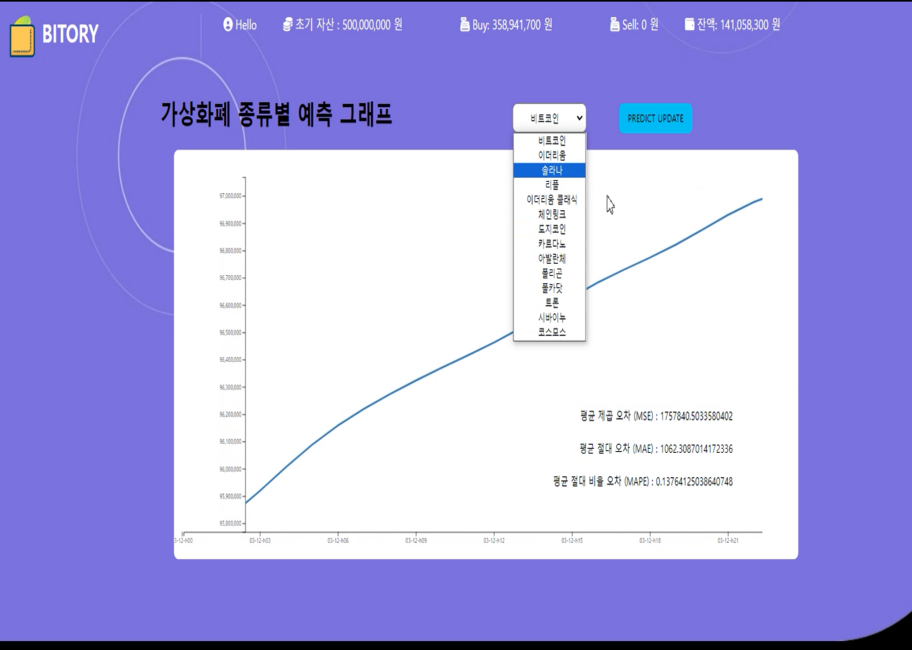
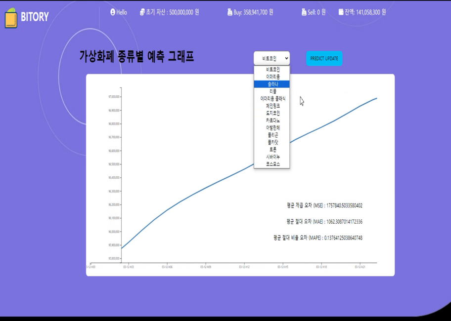

My responsibility
프로젝트를 성공적으로 완성하기 위해서
프로젝트를 성공적으로 완성하기 위해서
아래와 같은 업무를 진행해왔습니다.
- 수행 기간: 2024.01.15 ~ 2024.03.07 (2개월)
- 참여 인원: 3명
- 기여도: PE/BE: 80%, Design: 20%
Trend 웹페이지에서 Upbit API를 통해 현재가를 JavaScript와 Websocket 으로 통신 받아,
실시간 테이블 구현과 Chart.js를 통해 거래대금 TOP5 데이터와,
전일 기준 변동률 TOP5 데이터를 시각화하였습니다.
Trade 웹페이지에서는 실시간 테이블 리스트 클릭 시 JavaScript 이벤트 함수를 이용하여 해당
종목의 상세 정보가 나오며, 수량을 입력 하고 매수 버튼을 누르면 Java에서 입력된 알고리즘을
기반으로 계산되고 매수 됨과 동시에 헤더의 자산 정보와 오른쪽 List에서 구입한 이력이 뜨도록 구현하였습니다.
JavaScript으로 매수한 데이터를 받아와, 해당 데이터를 JSON형식으로 변환하여,
Python에 Ajax통신으로 전달하여 해당 데이터를 기반으로 질문하여,
투자 분석 리포트를 langchain, Gemini 답변을 받아
JavaScript로 답변 데이터를 통신 받아 화면에 출력되도록 구현하였습니다.
Prophet을 활용한 AI 서버를 통해 Upbit API에서 가져온 6개월간의 가격 데이터를 학습시키면 10일
후까지의 예측 가격을 실시간 라인 차트로 확인할 수 있습니다. 차트에는 가상화폐 가격 예측 중
발생하는 오차율도 함께 표시되어 있습니다.
Tymeleaf를 통한 템플릿 레이어화, CSS, HTML, JavaScript,Bootstrap 이용 사용자가 손쉽게 이용할 수 있도록 화면을 구상하였습니다.
 
